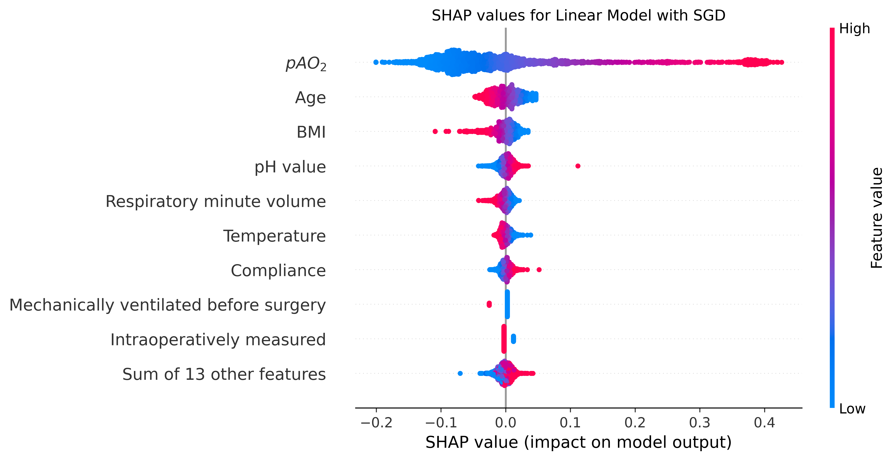

/Users/abeckerp/Documents/pao2-prediction-project/.venv/lib/python3.12/site-packages/tqdm/auto.py:21: TqdmWarning: IProgress not found. Please update jupyter and ipywidgets. See https://ipywidgets.readthedocs.io/en/stable/user_install.html
from .autonotebook import tqdm as notebook_tqdm
withopen(config.get("pickle").get(f"feature_list"), "rb") as feature_pickle: feature_list = pickle.load(feature_pickle)withopen(config.get("pickle").get(f"y_scaler"), "rb") as scaler_y_pickle: scaler_y = pickle.load(scaler_y_pickle)withopen(config.get("pickle").get(f"train_test_data"), "rb") as train_test_pickle: train_test_data = pickle.load(train_test_pickle)withopen(config.get("pickle").get(f"completed_train_data"), "rb") as algo_pickle: algo_train_data_dict = pickle.load(algo_pickle)withopen(config.get("pickle").get(f"slices"), "rb") as slices_pickle: slices = pickle.load(slices_pickle)
2 Binning of best regressor
Code
be_path =f"{config.get('pickle').get('estimator')}{best_regressor}{slices.get(best_regressor)}.pickle"print(be_path)estimator = pickle.load(open(be_path, "rb"))X = algo_train_data_dict.get(best_regressor).get("x_test")[:, 1:]X_unscaled = algo_train_data_dict.get(best_regressor).get("x_test_unscaled")[ :, 1:]y = train_test_data.get("test").get("y")[:, 1:]model = estimator.fit( algo_train_data_dict.get(best_regressor).get("x_train")[:, 1:], train_test_data.get("train").get("y_scaled")[:, 1],)n_obs = []my_obs = []sd_obs = []n_exp = []my_predicted = [] sd_predicted = []index = []predictions = inverse_transform_shaped( scaler_y, estimator.predict(X),)for interval in pd.cut( y.ravel(), bins= [0]+np.arange(100, 451, 50).tolist()+[650], right=True).categories:print(interval) index.append(f"({interval.left}, {interval.right}]") support_y = np.array( [Trueif x > interval.left and x <= interval.right elseFalsefor x in y] ) # for y and my_predicted support_predictions = np.array( [Trueif x > interval.left and x <= interval.right elseFalsefor x in predictions] ) # for chi2print(f"{sum(support_y)} y labels and {sum(support_predictions)} predictions are supporting interval {interval}" ) n_obs.append(sum(support_y)) n_exp.append(sum(support_predictions)) observed_y = y[support_y]iflen(y[support_y]) ==0:continue my_obs.append(np.mean(y[support_y])) # mean for this bin sd_obs.append(np.std(y[support_y])) my_predicted.append(np.mean(predictions[support_y])) sd_predicted.append(np.std(predictions[support_y]))chi2_df = pd.DataFrame( {"n_observed": n_obs,"n_predicted": n_exp,"my_observed": my_obs,"sd_observed": sd_obs,"my_predicted": my_predicted,"sd_predicted": sd_predicted, }, index=index,).round({"my_observed": 2,"sd_observed": 2,"my_predicted": 2,"sd_predicted": 2,})display(chi2_df)statistics, p = stats.chisquare( chi2_df.loc[:, "n_observed"], chi2_df.loc[:, "n_predicted"],)print(f"Chi-squared test returned a p-value of {round(p,4)}")
data/3_05_estimator_sgd2.pickle
(0, 100]
75 y labels and 32 predictions are supporting interval (0, 100]
(100, 150]
741 y labels and 618 predictions are supporting interval (100, 150]
(150, 200]
1499 y labels and 1574 predictions are supporting interval (150, 200]
(200, 250]
704 y labels and 792 predictions are supporting interval (200, 250]
(250, 300]
199 y labels and 206 predictions are supporting interval (250, 300]
(300, 350]
90 y labels and 83 predictions are supporting interval (300, 350]
(350, 400]
84 y labels and 87 predictions are supporting interval (350, 400]
(400, 450]
89 y labels and 176 predictions are supporting interval (400, 450]
(450, 650]
118 y labels and 31 predictions are supporting interval (450, 650]
y-axis values are based on the range of actual values: mean of predicted values is based on observations where the actual \(paO_2\) value is within a specific bin (an observation’s predicted value is represented in the same bin as the actual value).
Example: actual value = 175, predicted value = 210 => x-value = 150-200
explainer = shap.Explainer( model, algo_train_data_dict.get(best_regressor).get("x_train")[:, 1:], feature_names=[config.get("column_names").get(feature) for feature in algo_train_data_dict.get(best_regressor).get("selected_features")])shap_values = explainer(algo_train_data_dict.get(best_regressor).get("x_test")[:, 1:])shap_plot = shap.plots.beeswarm(shap_values, show=False)plt.title(f"SHAP values for {config.get('plot_titles').get(best_regressor)}")plt.savefig(f"plots/shap_values_{best_regressor}.png", bbox_inches="tight", dpi=300)plt.show()plt.close("all")

SHAP values with sum of unimportant features
5 Percentage Errors
Code
algorithm = config.get('plot_titles').get(best_regressor)pe_list =list(map(lambda tup: 100* (tup[0] - tup[1]) / tup[1], zip(y.ravel(), predictions)))fig = plt.figure(figsize=(config.get('plot_size')/2, config.get('plot_size')))plt.title(f"{algorithm}:\nBoxplot for percentage errors of predicted $paO_2$ values")bxplt = plt.boxplot(pe_list)plt.ylabel("percentage error in %")plt.xticks([])plt.savefig(f"plots/percentage_errors_{best_regressor}.png", bbox_inches="tight", dpi=300)plt.show()plt.close("all")print(f"\n{algorithm.upper()}")print(f"Percentage Error median: {round(np.median(pe_list),2)}")lower_boundary = (pd.DataFrame(pe_list).quantile(q=0.25))[0]print(f"Percentage Error Q1: {round(lower_boundary,4)}")upper_boundary = (pd.DataFrame(pe_list).quantile(q=0.75))[0]print(f"Percentage Error Q3: {round(upper_boundary,4)}")iqr = upper_boundary - lower_boundaryprint(f"Interquartile range of percentage errors: {round(iqr,4)}")print(f"Lower boundary for outliers: {round(lower_boundary-1.5*iqr,3)}")print(f"Upper boundary for outliers: {round(upper_boundary+1.5*iqr,3)}")pao2_pred_list_over = []pao2_x_list_over = []identifier_over = []pao2_pred_list_under = []pao2_x_list_under = []identifier_under = []# find outliers for plotfor idx, x inenumerate(y): # error is neg: overestimated# error is pos: underestimated pe =100* (predictions[idx] - x) / xif pe <= lower_boundary -1.5*iqr:# highly underestimated pao2_pred_list_under.append(predictions[idx]) pao2_x_list_under.append(x) identifier_under.append(train_test_data.get("test").get("group")[idx])elif pe >= upper_boundary +1.5*iqr:# highly overestimated pao2_pred_list_over.append(predictions[idx]) pao2_x_list_over.append(x) identifier_over.append(train_test_data.get("test").get("group")[idx])print(f"Found {len(pao2_pred_list_over)} highly overerstimated paO2 values for {len(set(identifier_over))} patients.")print(f"Found {len(pao2_pred_list_under)} highly undererstimated paO2 values for {len(set(identifier_under))} patients.")
Boxplot of percentage errors
LINEAR MODEL WITH SGD
Percentage Error median: 0.33
Percentage Error Q1: -9.4753
Percentage Error Q3: 9.2769
Interquartile range of percentage errors: 18.7521
Lower boundary for outliers: -37.603
Upper boundary for outliers: 37.405
Found 237 highly overerstimated paO2 values for 133 patients.
Found 14 highly undererstimated paO2 values for 13 patients.
6 Figure 7
Code
for col_idx, values inenumerate(X_unscaled.T): col_name = algo_train_data_dict.get(best_regressor).get("selected_features")[ col_idx ] list_over = [] list_under = []for idx, x inenumerate(y): pe =100* (predictions[idx] - x) / x# check if y value is overestimatedif pe <= lower_boundary -1.5* iqr:# highly underestimated list_under.append(values[idx])# check if overestimatedelif pe >= upper_boundary +1.5* iqr:# highly overestimated list_over.append(values[idx])if col_name in config.get("multi_measurements_columns"):# pool over patient pooled_list_over = [] pooled_list_under = []for identifier in identifier_over: pooled_list_over.append( np.mean( [ list_over[i]for i, o inenumerate(identifier_over)if o == identifier ] ) )for identifier in identifier_under: pooled_list_under.append( np.mean( [ list_under[i]for i, o inenumerate(identifier_under)if o == identifier ] ) ) list_over = pooled_list_over list_under = pooled_list_underelif col_name in config.get("single_measurements_columns") + ["creatinine"]: list_over =list(set(list_over)) list_under =list(set(list_under))else:print("Error")break p =round(stats.mannwhitneyu(list_over, list_under, method="asymptotic").pvalue, 5)print(f"{col_name}: p={p}")if p <0.05:print(f"\tmean {col_name} in overestimated (n={len(list_over)}): {round(np.mean(list_over),3)} - mean {col_name} in underestimated (n={len(list_under)}): {round(np.mean(list_under),3)}" )plt.rcParams["figure.figsize"] = [config.get("plot_size"), config.get("plot_size")]fig, ax = plt.subplots()ax.scatter(y.ravel(), predictions, edgecolors=(0, 0, 0))ax.scatter(pao2_x_list_over, pao2_pred_list_over, edgecolors=(0, 0, 0), color="yellow")ax.scatter( pao2_x_list_under, pao2_pred_list_under, edgecolors=(0, 0, 0), color="orange",)max_val =610ax.set_xlim(0, max_val)ax.set_ylim(0, max_val)ax.plot( [0, max_val], [0, max_val], color="red", linestyle="--", linewidth=2,)ax.set_xlabel("Measured $paO_2$ in mmHg")ax.set_ylabel("Predicted $paO_2$ in mmHg")eval_dict = evaluate( predictions, train_test_data.get("test").get("y"), np.array(X).shape[1],)ax.set_title(f"{config.get('plot_titles').get(best_regressor)}:\nmeasured vs. predicted $paO_2$ values,\nMAPE={round(eval_dict.get('mape'),2)} %, MAE={round(eval_dict.get('mae'),2)}, RMSE={round(eval_dict.get('rmse'),2)}, adj. $R^2$={round(eval_dict.get('adjusted_r2'),4)}")plt.savefig(f"plots/measured_predicted_outliers_{best_regressor}.png", dpi=300, bbox_inches="tight",)plt.show()plt.close("all")
idx: p=0.0001
mean idx in overestimated (n=237): 2.468 - mean idx in underestimated (n=14): 0.857
co2: p=0.39185
spo2: p=0.84164
rmv: p=0.15048
respiratory_rate: p=0.89259
compliance: p=0.99244
pAO2: p=0.201
systolic: p=0.92302
diastolic: p=0.33378
mean_art_press: p=0.70615
heart_rate: p=0.62362
temperature: p=0.03532
mean temperature in overestimated (n=237): 36.219 - mean temperature in underestimated (n=14): 36.563
ph: p=0.75029
hemoglobin: p=0.911
already_intubated: p=1.0
bmi: p=0.15816
age: p=0.7936
creatinine: p=1.0
gadrey: p=0.94691
sex_male: p=1.0
timepoint_intraop: p=0.03149
mean timepoint_intraop in overestimated (n=237): 0.789 - mean timepoint_intraop in underestimated (n=14): 0.5
asa: p=0.70862